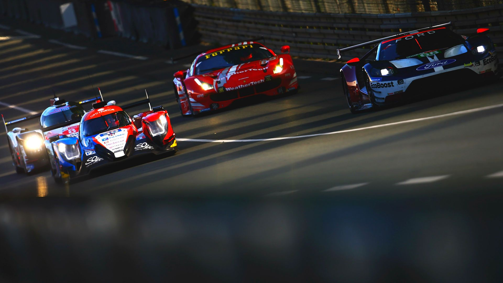
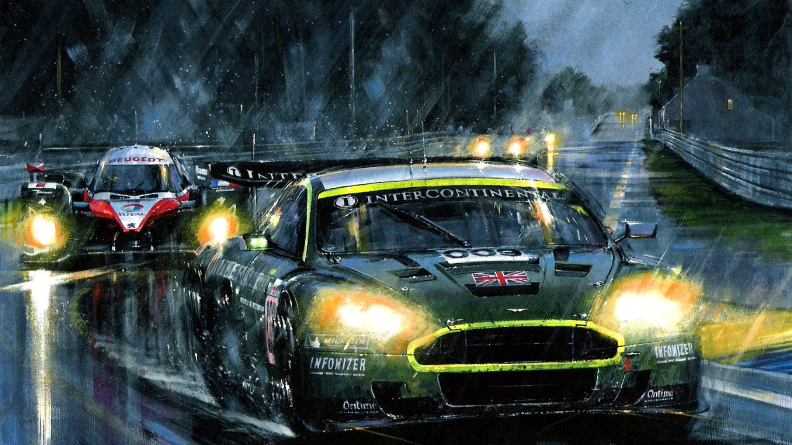
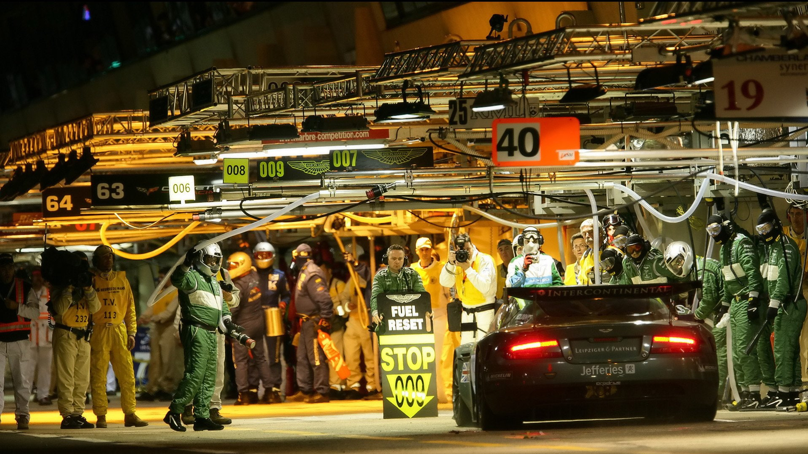
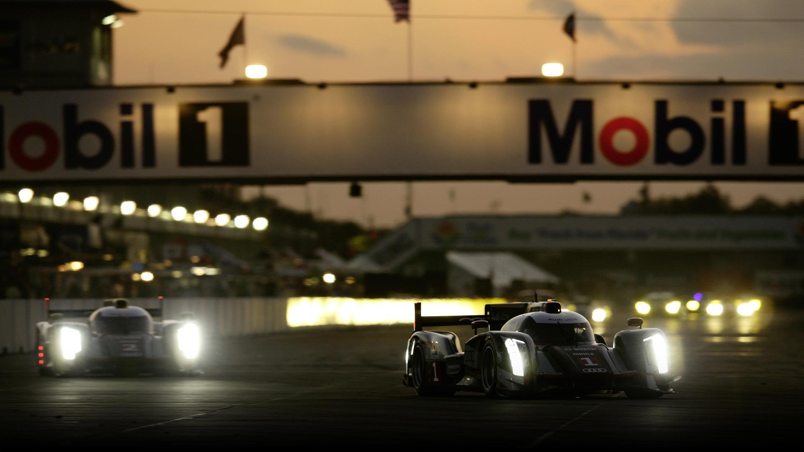
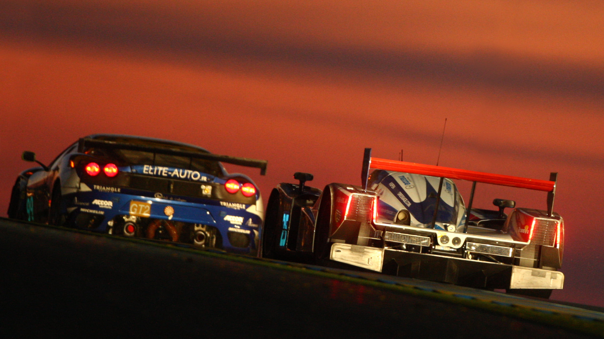

Le Mans 24 horas é uma das mais famosas corridas de resistência de automóveis do mundo. É realizada anualmente no Circuito de la Sarthe, localizado na cidade de Le Mans, na França. A corrida dura 24 horas, sem interrupção, e os carros percorrem mais de 5.000 km durante a prova.
A corrida começou em 1923 como uma maneira de testar a resistência dos carros e a habilidade dos pilotos em uma corrida de longa duração. Hoje em dia, é uma das corridas mais prestigiadas e desafiadoras do mundo do automobilismo, atraindo equipes e pilotos de todo o mundo.